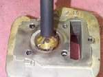

The valve seat is the ring in the cylinder head that the valve face closes against. It is cut at an angle, most often 45 degrees, and forms the seal that keeps combustion pressure in the cylinder.
What it does
When the valve closes, the valve face and the seat meet along a thin line. Most of the valve's heat passes into the head through this contact. A smooth, even seat seals the gas and cools the valve. A pitted or burnt seat leaks and the valve overheats.
Signs it is worn or failing
- Low compression that stays low after a wet test, or leak-down air escaping from the inlet or exhaust.
- A valve clearance that tightens up on its own as the valve sinks into the seat. See Check and adjust valve clearance.
- Popping from the exhaust or hard starting from a burnt exhaust valve.
- A dark, pitted or uneven ring where the valve touches.
When to replace it
Seats are normally cut again, not replaced. A seat that is too wide or too sunken after cutting, or cracked, needs a new insert or a new head. Follow your bike's manual for the limits.
What to match when buying
- Seats come already fitted in the head. If an insert is needed, give the engine code and say intake or exhaust.
- Buy a new valve to suit the cut seat. Valve faces have a thin hard coating that grinding can remove.
- Seat cutters must match the valve angle and the guide size. Take the old valve to the supplier.
Fitting notes
- Cut the seat with the valve guide in good condition, because the cutter pilots in the guide. See Valve guides.
- Cut until the seat is smooth and even, then lap the valve in with compound until it shows a matte ring all round. Use the back and forth motion, not a drill.
- Test with solvent poured in the chamber. The ports must stay dry for a minute or two. See Lap a valve and seat and Test valve seating for leaks.
- Clean the inlet port, manifold and air filter tube afterwards so no dirt lodges on the new seat.